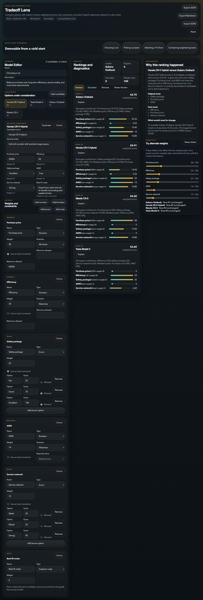

Step 1
Load a demo and get an immediate model, not an empty spreadsheet.
The left pane defines candidates and criteria. The center ranks them. The right explains the current result in normal language.

Demo-first onboarding
The app is interesting immediately because real scenarios are one click away.
No black box
The current leader, exclusions, and total active weight are visible at a glance.
Editable model
Every candidate value, weight, and constraint can be changed in-place.